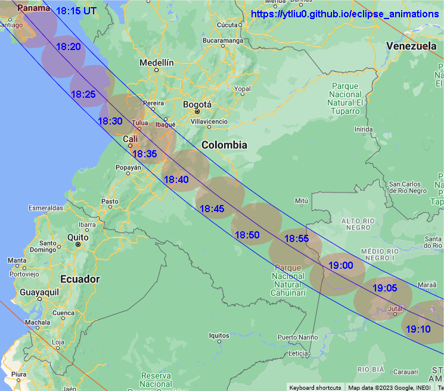
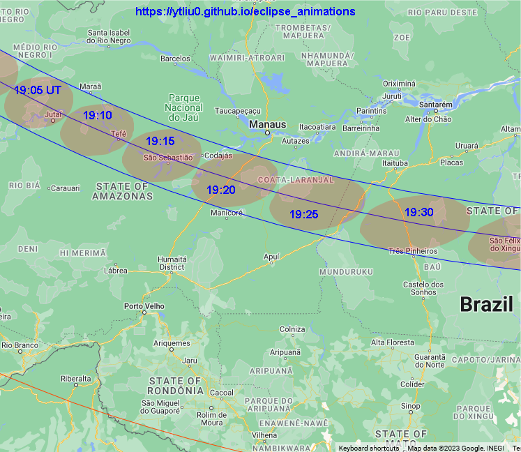

Annular Solar Eclipse on October 14, 2023
The annular solar eclipse on October 14, 2023 will be visible along a path of annularity that will pass through the United States, Mexico, Guatemala, Belize, Honduras, Nicaragua, Costa Rica, Panama, Colombia and Brazil. Many places in North and Latin America will be able to see partial eclipses.
Annular solar eclipses will be visible at locations at which Moon's antumbra (extension of Moon's dark shadow, umbra) passes through. Moon's antumbra will appear on Earth at 16:10 UT (9:10 PDT, 11:10 CDT, 12:10 EDT) in the North Pacific ocean close to the southwest coast of Canada. Six minutes later, it will reach the coast of the US in Oregon. In the next 44 minutes, it will pass through 8 US states and enter the Gulf of Mexico. In the next 2.75 hours, it will traverse the Yucatán Peninsula, several countries in Central America, Colombia and northern Brazil. After passing through the cities Natal and João Pessoa in northeastern Brazil around 19:45 UT, the antumbra will exit Earth at 19:49 UT in the south Atlantic ocean close to the northeast coast of Brazil.
Contents
Global View
Orthographic Map
In this orthographic map, the red dot at the center is the location of the greatest eclipse, where Moon's shadow axis is closest to the geocenter. The black dot near the top is the north pole. The purple lines are the limits of Moon's penumbra. The three blue lines across the map center are the northern limit of antumbra (upper line), central line (middle line), and southern limit of antumbra (lower line). Annular solar eclipse is visible inside the narrow strip bounded by the northern and southern limits of antumbra. The teardrop-shape brown line on the left (west) is the locus of points where the eclipse begins/ends at Sunrise. The middle red line is the locus of points where the maximum eclipse occurs at Sunrise. The teardrop-shape brown line on the right (east) is the locus of points where the eclipse begins/ends at Sunset. The middle red line is the locus of points where the maximum eclipse occurs at Sunset. No eclipse is visible beyond the region bounded by the brown and purple lines. The orange red lines with the same shape as the penumbra limits are lines of equal eclipse magnitude, and the magnitude is indicated (25%, 50%, 75%) near each line.
Animation
In this animation, the green region is Moon's penumbra. The red region inside the antumbra limits is Moon's antumbra. The dark region outside the penumbra is Earth's night side.
My Eight Millennia of Eclipses website also has an orthographic map with animation. You can also click on the map to show a prediction of the eclipse circumstances at a location.
Path of Annuality
In the following maps, the limits of antumbra and central line are shown together with Moon's antumbra at different times. Lunar limb corrections are included and are calculated based on the data from the Lunar Reconnaissance Orbiter.
Maps
1. Antumbra path between 16:20 UT (9:20 PDT) and 16:30 UT (9:30 PDT)
Oregon, California, Nevada, Utah.
Background map source: Google maps (Map data © 2023)
2. Antumbra path between 16:30 UT and 16:55 UT
Utah, Arizona, Colorado, New Mexico and Texas.
Background map source: Google maps (Map data © 2023)
3. Antumbra path between 16:50 UT and 17:30 UT
Texas and Gulf of Mexico.

Background map source: Google maps (Map data © 2023)
4. Antumbra path between 17:30 UT and 19:10 UT
Guatemala, Belize, Honduras, Nicaragua, Costa Rica, and Panama.
Background map source: Google maps (Map data © 2023)
5. Antumbra path between 18:15 UT and 19:10 UT
Panama, Colombia and Brazil.

Background map source: Google maps (Map data © 2023)
6. Antumbra path between 19:05 UT and 19:30 UT
Brazil

Background map source: Google maps (Map data © 2023)
7. Antumbra path between 19:30 UT and 19:40 UT
Brazil
Background map source: Google maps (Map data © 2023)
8. Antumbra path between 19:40 UT and 19:45 UT
Brazil
Background map source: Google maps (Map data © 2023)
9. Interactive Map
My Eight Millennia of Eclipses website provides an interactive map that allows you to zoom in/out and pan the map. You can also click on the map and get a prediction of the eclipse circumstances. However, lunar limb corrections are not included in the map and the path limits may be off by 1-3 kilometers. The prediction of contact times will also be off by a few seconds.
Animation
Background map source: Google Maps (Map Data ©2023)
This animation shows Moon's antumbra traverses the Earth. The antumbra speed is also shown. This is the speed of Moon's shadow traversing the Earth as measured by observers stationary on Earth.
Local Circumstances
The information provided above focuses on the path of Moon's shadow. It's useful if you want to know where and when to see the eclipse. Suppose you have chosen a location to view the eclipse. The next thing you want to know is what you will see at the location. This is called the local circumstances.
The local circumstances of this solar eclipse in major cities around the world can be found on this page on my Eight Millennia of Eclipses website. You can click on the links to see a more detailed information of the eclipse in each city listed there. Note that daylight saving time is not taken into account in the city time zone. Lunar limb corrections are also not included in the calulations and the contact times may be off by a few seconds. If you don't find the location you want on that page, go to this interactive map, zoom in to your location and click on it to obtain the eclipse circumstances. Alternatively, you can use the form below to enter your location.
Fill in the longitude and latitude (in decimals) of a location below, click the submit button and it will open my Eight Millennia of Eclipse page on a new browser tab. The page contains the local circumstances of the eclipse and an animation of the eclipse that will be observed at the location.
Longitude: °
Latitude: °
Time Zone: (Enter the UTC offset; PDT = -7, CDT = -5, EDT = -4.)